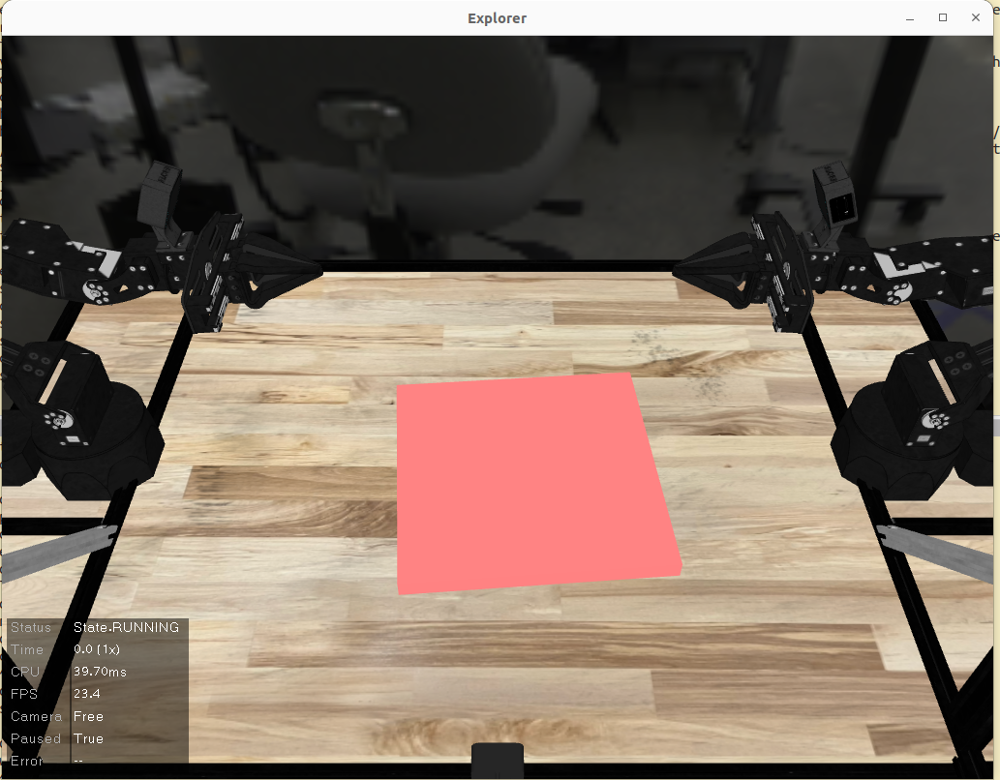

Using OpenPI Model on ALOHA Simulation
OpenPI is a powerful foundation model for robotic manipulation that can understand and execute complex manipulation tasks from natural language instructions. The released fine tune model is trained on datasets from different robots (ALOHA, DROID, LIBERO). Given ALOHA (A Low-cost Open-source Hardware for Autonomous manipulation) sim is a well established simulator, it creates a robust platform for me to test the OpenPI model in the simulation.
What I would like to achieve in this post is to connect OpenPI model and Aloha simulator, so that we can get the observations from the simulator, send them (along with prompt) to OpenPI model, get the actions, send the actions to Aloha sim, and see if the model commands work out of the box.
What is OpenPI?
OpenPI is a large-scale robotics foundation model trained on diverse manipulation data that can:
- Understand natural language instructions for complex manipulation tasks
- Generate executable action sequences from high-level task descriptions
- Adapt to different robotic platforms through its modular architecture
- Learn from demonstration data to improve task performance
"OpenPI bridges the gap between natural language understanding and robotic manipulation, making complex tasks accessible through simple instructions."
ALOHA Simulation Environment
ALOHA provides a comprehensive simulation environment that includes:
- Dual-arm robotic system with realistic physics simulation
- Diverse manipulation scenarios including household tasks
- Camera sensors for visual feedback and perception
- Modular design for easy task customization
Setting Up OpenPI with ALOHA
Prerequisites
Before getting started, ensure you have:
- A local computer with ALOHA simulation environment set up. Below we call this local env.
- Same computer or a remote server (AWS, GCP) CUDA-compatible GPU (at least 24G GPU memory). Below we call this remote server.
- AWS: g5.4xlarge
- GCP: g2-standard-8
- Choose Ubuntu 22 image (suggested by OpenPI) and I installed GPU driver manually
Steps
1. (Local env and remote server) Follow OpenPI instructions to install openPI in a virtual env.
2. (Local env) Follow Aloha_sim instructions to install Aloha sim in the same virtual env.
3. (Remote server) Set up OpenPI model server
(optional) gcloud compute ssh --zone=us-west1-a -- -L 8001:localhost:8000 # remap to port 8001 as my local 8000 port is used
uv run scripts/serve_policy.py --env=ALOHA_SIM This will spawn up a server in remote server to serve a specific model (in this case `ALOHA_SIM` model checkpoint)
4. (Local env) Create a script which gets the states from aloha sim, send them to the remote server via web socket, wait for the actions to return and send the actions to simulator.
Note that the states read from aloha sim might be different from the states OpenPI model needs, so some remapping is needed.
If you are not sure what are the states, you can print the Timestep and get the detailed states:
observation={
'overhead_cam': array([[[38, 37, 34],
[38, 37, 34],
[39, 38, 35],
...,] shape=(480, 848, 3), dtype=uint8),
'worms_eye_cam': array([[[ 13, 13, 13],
[ 13, 13, 13],
[ 13, 13, 13],
...,] shape=(480, 848, 3), dtype=uint8),
'wrist_cam_left': array([[[201, 181, 156],
[201, 181, 156],
[200, 180, 155],
...,], shape=(480, 848, 3), dtype=uint8),
'wrist_cam_right': array([[[100, 98, 96],
[ 99, 97, 96],
[ 99, 97, 96],
...,], shape=(480, 848, 3), dtype=uint8),
'commanded_joints_pos': array([ 1. , -1. , 1. , -0.1, 1. , -1. , 1. , -1. , 0.1, -1. , 1. ,
-1. , 0.1, -0.1]),
'joints_pos': array([ 0.99999981, -0.99647149, 1.02385611, -0.10096935, 1.01532444,
-1.00691069, 0.89760539, -1.00000068, 0.11115466, -0.98875707,
1.00626444, -1.01548462, 0.10704498, -0.06445472]),
'joints_vel': array([ 1.66724583e-06, -1.80126563e-03, -1.43900395e-03, 3.04101457e-08,
1.43732532e-04, -3.23339069e-05, 1.79602634e-08, 5.93016137e-07,
1.09778011e-05, 2.15828230e-03, -4.42307478e-05, 1.70258303e-05,
-9.33115051e-05, 2.51849170e-05, 4.74895675e-08, -4.96911670e-08]),
'physics_state': array([ 9.99999922e-01, -9.96648133e-01, 1.02371581e+00, -1.00969346e-01,
1.01533684e+00, -1.00691393e+00, 2.55578715e-02, 2.56684472e-02,
-9.99999920e-01, 1.11366427e-01, -9.88761294e-01, 1.00626609e+00,
-1.01549057e+00, 1.07047375e-01, 7.74251165e-03, 8.49681109e-03,
1.61389783e-01, -4.72533042e-02, 3.16101929e-02, 7.71041701e-01,
-1.38902593e-05, 2.08568358e-04, -6.36784620e-01, -1.57767423e-01,
1.86642700e-02, 3.25333903e-02, 9.99999624e-01, -5.37630861e-04,
-6.80770724e-04, -1.25212201e-05, 7.55768177e-07, -1.73340288e-03,
-1.36894889e-03, -1.36105070e-08, 1.08249262e-04, -3.22442859e-05,
1.15066559e-08, 5.45669097e-07, 5.08864710e-06, 2.07913955e-03,
-4.04322531e-05, 1.60750717e-05, -3.28389046e-05, 2.30414874e-05,
4.68277375e-08, -4.89862158e-08, -2.84465723e-08, -1.11741633e-07,
-6.27614694e-07, 2.80564069e-05, 5.96245493e-05, 3.02231373e-08,
1.61074038e-10, -8.32415261e-09, -1.48846064e-15, -1.89664808e-10,
1.49782058e-10, -1.39299950e-07]),
'undelayed_joints_pos': array([ 0.99999992, -0.99664813, 1.02371581, -0.10096935, 1.01533684,
-1.00691393, 0.89760547, -0.99999992, 0.11136643, -0.98876129,
1.00626609, -1.01549057, 0.10704737, -0.06445447]),
'undelayed_joints_vel': array([ 7.55768177e-07, -1.73340288e-03, -1.36894889e-03, -1.36105070e-08,
1.08249262e-04, -3.22442859e-05, 1.15066559e-08, 5.45669097e-07,
5.08864710e-06, 2.07913955e-03, -4.04322531e-05, 1.60750717e-05,
-3.28389046e-05, 2.30414874e-05, 4.68277375e-08, -4.89862158e-08]),
'delayed_joints_pos': array([ 0.99999981, -0.99647149, 1.02385611, -0.10096935, 1.01532444,
-1.00691069, 0.89760539, -1.00000068, 0.11115466, -0.98875707,
1.00626444, -1.01548462, 0.10704498, -0.06445472]),
'delayed_joints_vel': array([ 1.66724583e-06, -1.80126563e-03, -1.43900395e-03, 3.04101457e-08,
1.43732532e-04, -3.23339069e-05, 1.79602634e-08, 5.93016137e-07,
1.09778011e-05, 2.15828230e-03, -4.42307478e-05, 1.70258303e-05,
-9.33115051e-05, 2.51849170e-05, 4.74895675e-08, -4.96911670e-08]),
'delayed_physics_state': array([ 9.99998994e-01, -9.96097185e-01, 1.02415862e+00, -1.00969369e-01,
1.01528152e+00, -1.00690447e+00, 2.55578636e-02, 2.56682566e-02,
-1.00000598e+00, 1.10706625e-01, -9.88747414e-01, 1.00626075e+00,
-1.01544115e+00, 1.07038951e-01, 7.74249756e-03, 8.49682585e-03,
1.61389791e-01, -4.72532709e-02, 3.16103796e-02, 7.71041700e-01,
-2.27547603e-05, 2.04387940e-04, -6.36784622e-01, -1.57767423e-01,
1.86642725e-02, 3.25333903e-02, 9.99999624e-01, -5.37630847e-04,
-6.80770735e-04, -1.25003251e-05, 8.20699437e-06, -1.94504192e-03,
-1.59018865e-03, 2.38245247e-07, 3.21733366e-04, -2.86469647e-05,
5.49496269e-08, 7.74880973e-07, 5.35753294e-05, 2.32587568e-03,
-5.25285324e-05, 2.03717166e-05, -4.05393856e-04, 3.86094736e-05,
4.48595780e-08, -4.70179679e-08, -2.79666243e-08, -1.09856320e-07,
-6.16957462e-07, 2.75800956e-05, 5.86123086e-05, 2.97100410e-08,
1.61074384e-10, -8.32415262e-09, -1.25030462e-15, -1.89664724e-10,
1.49780543e-10, -1.39299950e-07])})
There are totally 14 actions in this env, 7 actions per arm. Here is the script to connect everything together.
import sys
import os
sys.path.insert(0, os.path.expanduser('~/code/aloha_sim')) # hack to find the package
from dm_control import viewer
import numpy as np
from aloha_sim import task_suite
from openpi_client import image_tools
from openpi_client import websocket_client_policy
class Pi0Policy:
"""Policy class that queries Pi0 server for actions."""
def __init__(self, client, task_prompt, replan_frequency=10, execute_steps_per_action=5):
"""
Args:
client: WebsocketClientPolicy instance
task_prompt: Task instruction string
replan_frequency: Query Pi0 every N steps
execute_steps_per_action: Hold each action for N steps
"""
self.client = client
self.task_prompt = task_prompt
self.replan_frequency = replan_frequency
self.execute_steps_per_action = execute_steps_per_action
# State
self.action_buffer = None
self.action_index = 0
self.current_action = None
self.step_counter = 0
self.action_hold_counter = 0
def process_observation(self, obs):
"""Convert ALOHA sim observation to Pi0 format."""
try:
# Extract images
img_overhead = obs['overhead_cam']
img_worms_eye = obs['worms_eye_cam']
img_wrist_left = obs['wrist_cam_left']
img_wrist_right = obs['wrist_cam_right']
# Extract joint states
joint_positions = obs['joints_pos']
# Create Pi0 observation
observation = {
"state": joint_positions.astype(np.float64),
"images": {
"cam_high": np.transpose(
image_tools.convert_to_uint8(
image_tools.resize_with_pad(img_overhead, 224, 224)
), (2, 0, 1)
),
"cam_low": np.transpose(
image_tools.convert_to_uint8(
image_tools.resize_with_pad(img_worms_eye, 224, 224)
), (2, 0, 1)
),
"cam_left_wrist": np.transpose(
image_tools.convert_to_uint8(
image_tools.resize_with_pad(img_wrist_left, 224, 224)
), (2, 0, 1)
),
"cam_right_wrist": np.transpose(
image_tools.convert_to_uint8(
image_tools.resize_with_pad(img_wrist_right, 224, 224)
), (2, 0, 1)
),
},
"prompt": self.task_prompt,
}
return observation
except KeyError as e:
print(f"Missing observation key: {e}")
print(f"Available keys: {obs.keys()}")
return None
def __call__(self, timestep):
"""Policy function called by the viewer every step."""
obs = timestep.observation
# Query Pi0 every replan_frequency steps
if self.step_counter % self.replan_frequency == 0:
print(f"\n=== Step {self.step_counter}: Replanning ===")
# Process observation
pi0_obs = self.process_observation(obs)
if pi0_obs is None:
return np.zeros(14) # ALOHA has 14D action space
try:
# Get action chunk from Pi0
action_chunk = self.client.infer(pi0_obs)["actions"]
self.action_buffer = action_chunk
self.action_index = 0
self.action_hold_counter = 0
print(f"Received {self.action_buffer.shape[0]} actions from Pi0")
except Exception as e:
print(f"Error querying Pi0: {e}")
return np.zeros(14)
# Get next action from buffer every execute_steps_per_action steps
if self.action_hold_counter % self.execute_steps_per_action == 0:
if self.action_buffer is not None and self.action_index < len(self.action_buffer):
self.current_action = self.action_buffer[self.action_index]
self.action_index += 1
print(f" Step {self.step_counter}: Using action {self.action_index}/{len(self.action_buffer)}")
# Hold the current action for multiple steps
if self.current_action is not None:
action = self.current_action
else:
action = np.zeros(14)
# Increment counters
self.step_counter += 1
self.action_hold_counter += 1
# Handle episode end
if timestep.last():
print(f"\n{'='*60}")
print(f"Episode ended at step {self.step_counter}")
print(f"Final reward: {timestep.reward}")
print(f"{'='*60}\n")
self.reset()
return action
def reset(self):
"""Reset policy state for new episode."""
self.action_buffer = None
self.action_index = 0
self.current_action = None
self.step_counter = 0
self.action_hold_counter = 0
def main():
# Create ALOHA sim environment
env = task_suite.create_task_env('HandOverBanana', time_limit=800.0)
# Connect to Pi0 server
client = websocket_client_policy.WebsocketClientPolicy(host="localhost", port=8001)
# Create policy
policy = Pi0Policy(
client=client,
task_prompt="hand over banana",
replan_frequency=10,
execute_steps_per_action=2
)
# Launch viewer
print("=" * 60)
print("Launching ALOHA Sim with Pi0 Policy")
print("=" * 60)
print(f"Task: {policy.task_prompt}")
print(f"Replanning frequency: every {policy.replan_frequency} steps")
print(f"Action hold duration: {policy.execute_steps_per_action} steps")
print("Make sure Pi0 server is running on localhost:8001")
print("=" * 60)
viewer.launch(env, policy=policy)
if __name__ == "__main__":
main()After running this script, you should see a simulator explorer interface showing up. Press Space to start the simulation.
To try a different environment and model checkpoint, we can go to server_policy.py (in remote server) to change the config and dir. For example, there is a checkpoint
which is fine-tuned on towel folding, and there happens to be an aloha env called TowelFoldInHalf. So we can modify the serve_policy.py to be:
EnvMode.ALOHA: Checkpoint(
config="pi0_aloha_towel",
dir="gs://openpi-assets/checkpoints/pi0_aloha_towel",
),TowelFoldInHalf and a different prompt like "fold the towel in half".

Observations
I tried both pi0_aloha_sim checkpoint in HandOverBanana env and pi0_aloha_towel checkpoint in TowelFoldInHalf env, but neither works very well. After some time, the robotic arms do get actions from the model
but do not seem to move towards the goal. I tried different replanning and execution frequency but no success.
Some possible reasons:
pi0_aloha_simis not trained (at least not fine tuned) on hand over banana task, and not able to generalize.pi0_aloha_towelis trained with real world ALOHA robot, and there is a real-to-sim gap when inferencing in simulation.- Hyperparameter tuning, the right amount of frequency between waiting for action execution and sampling new actions.
Although we were not able to actually perform the task with pi0 model zero-shot in the simulation, at least we set up the entire pipeline and were able to feed the observations to the OpenPI model and send the returned actions back to the simulator. I am following up with OpenPI to see if there are further tunings can be done.